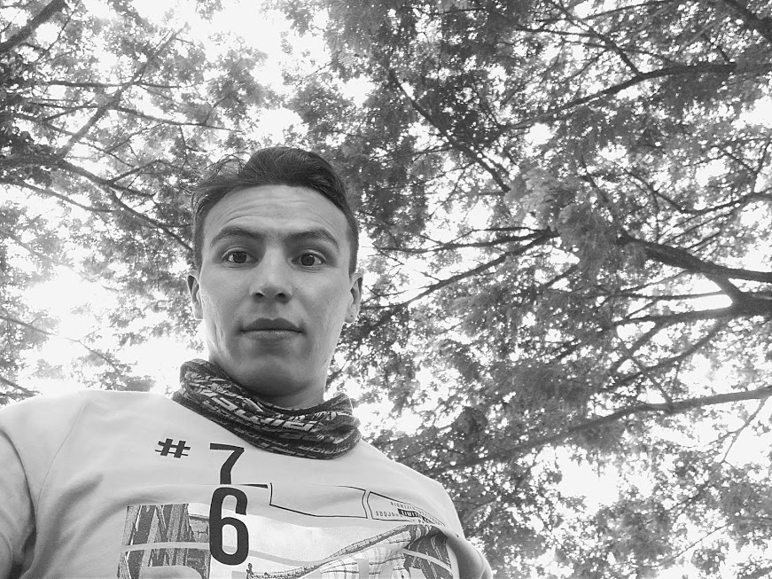
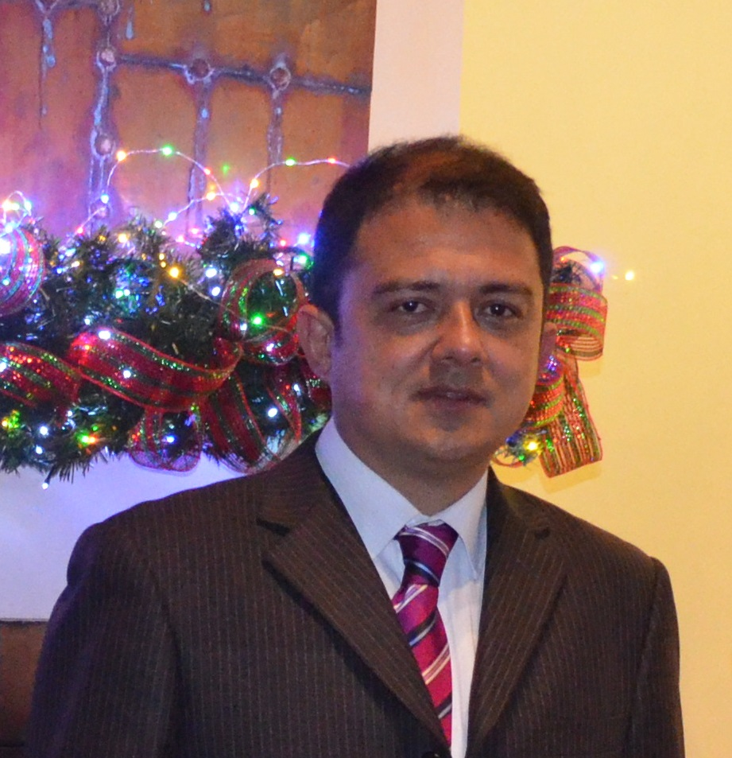

Edisson Leonardo Ortiz Lozano
Tecnólogo en Análisis y desarrollo de Sistemas de Información, actualmente laboro como Analista de Sistemas en una empresa del sector Agroindustrial, pertenezco al programa Ingeniería de Sistemas CEAD Yopal, mi expectativa principal es abordar de la mejor manera este curso, adquiriendo nuevos conocimientos y aplicarlos en mi vida cotidiana y laboral.
Codigo: 301122_67
Correo Institucional: elortizlo@unadvirtual.edu.co
Correo Personal: edissonortiz01@gmail.com
Programa: Ingenieria de Sistemas
Skype: +573204706276
Efraín Murillo Ossa
Me debía la profesionalización hace muchos años, esto hace que sea una de mis principales motivaciones, pero más aun, la idea de que sirviendo a la comunidad me sirvo a mis mismo. Generar software para mejorar la calidad de vida de cientos, miles o millones a través de una o varias aplicaciones es una mayor motivación, la ingeniería de sistema creo hará que esté más cerca esa meta.
Codigo: 301122_67
Correo Personal: emos103@gmail.com
Programa: Ingenieria de Sistemas
Skype: tommyc1069